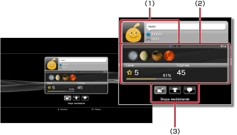
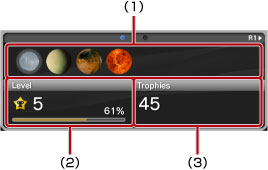

Visar profiler
Du kan behöva uppdatera systemprogramvaran för att använda denna funktion.
Du kan visa din profil eller en väns profil. För att se vännens profil, välj vännens avatar.

(1) |
Visa status |
|---|---|
(2) |
Information |
(3) |
Kontrollpanelen |
Tips!
För mer information om statusvisningar, se  (Vänner) > [Vänlista] > [Kontrollera status] i denna guide.
(Vänner) > [Vänlista] > [Kontrollera status] i denna guide.
Visar information i en profilskärm
I en profil kan du se information såsom trophy-förloppet, antal trophies som vunnits för varje klass och detaljerad information om dina vänner. Du kan gå igenom informationen genom att trycka på knapparna L1 eller R1.

(1) |
Senast vunna trophies |
|---|---|
(2) |
Nuvarande nivå och framstegen mot nästa nivå |
(3) |
Totalt antal vunna trophies |
Använd kontrollpanelen under [Profil]
När en profil visas, kan du utföra olika handlingar med kontrollpanelen. Ikoner som visas på kontrollpanelen varierar beroende på vännens status.
 |
Meny (speltitel) | Visa en lista över åtgärder som kan utföras i spelet som spelas för tillfället. |
|---|---|---|
 |
Lägg till en vän | Skicka en förfrågan om att lägga till någon till din vänlista. |
 |
Meddelandelista | Se en lista med meddelanden som du har utbytt med din vän. |
 |
Skapa meddelande | Skapa ett nytt meddelande |
 |
Jämför trophies | Jämför ditt trophy-förlopp med en väns status. |
 |
Starta en ny chatt | Starta en chatt. |
 |
Besvara vänförfrågan | Öppna meddelandet om att lägga till en vän och skicka ett svar. |
 |
Lägg till i lista över blockerade | Lägg till en vän i din lista över blockerade. |
 |
Radera från lista över blockerade | Ta bort en vän från listan över blockerade. |
Tips!
- Kontrollpanelen kan inte döljas.
- Kontrollpanelen visas inte när du ser din egen profil.
Ändra bakgrundsfärg för din profilskärm
Välj den övre vänstra fliken på profilskärmen och tryck på  -knappen för att se färgpaletten. Välj bakgrundsfärg för din profilskärm från paletten.
-knappen för att se färgpaletten. Välj bakgrundsfärg för din profilskärm från paletten.

Tips!
Du kan inte ändra bakgrundsfärg för andra personers profilskärmar.
Jämföra vinststatus för trophy med vänner
1. |
Under |
|---|---|
2. |
Välj
|
3. |
Välj ett spel.
|